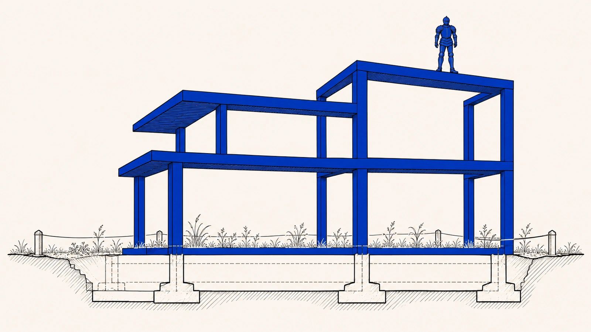

O que você recebe quando paga por algo digital?Objeto Imaterial de Consumo (OIC)
Quem compra uma geladeira leva a geladeira para casa. A partir daí, ela funciona longe de quem vendeu, e a loja só volta a entrar na história se aparecer um defeito.
Com muita coisa digital não é assim. Quem compra um item num jogo, uma assinatura num aplicativo ou um acesso numa plataforma também compra algo. Mas o uso disso continua dependendo, todos os dias, de um ambiente que a empresa mantém, ajusta e pode mudar. O que você tem só funciona do lado de dentro, sob as regras de quem governa o lugar.
As regras antigas foram pensadas para coisas estáveis, entregues de uma vez e cujo defeito dá para ver olhando. Elas não dão conta, sozinhas, de um produto que continua sendo mexido depois da venda. O que decide se você está nesse tipo de situação não é o item ser digital, nem o nome que a empresa dá a ele. É o quanto aquilo que você usa depende do ambiente que a plataforma governa.
De onde vem
Na economia industrial, o consumidor paga para adquirir um bem cuja existência, uma vez comprada, tende a se estabilizar fora do alcance do fornecedor, ao menos dentro de expectativas razoáveis de durabilidade e de disciplina dos vícios.p. 210
O problema já não se deixa apreender satisfatoriamente pela gramática clássica do produto ou do serviço, concebidos sob pressupostos de estabilidade, entrega pontual e defeito cognoscível por inspeção relativamente direta.p. 501
O critério, portanto, não é a materialidade do suporte nem a nomenclatura empregada pelo fornecedor, mas a dependência estrutural da fruição em relação a um ambiente governado.p. 719
Objeto Imaterial de Consumo (OIC)
É a categoria jurídica desse tipo de produto. Nele, o que conta não é só a imagem que aparece na tela, mas a posição de uso que você passa a ocupar e que a plataforma sustenta dia após dia. A categoria não diz que você comprou menos. Diz que você comprou um produto, no sentido da lei do consumidor, cujo fornecimento continua depois da compra. O serviço que a plataforma presta não apaga o produto. Ele é justamente o jeito de manter, atualizar e moldar o que foi vendido.
De onde vem
O que se afirma é que, sempre que a utilidade consumida se apresente como posição de fruição sustentada por governança privada contínua, haverá produto imaterial em sentido juridicamente relevante para a incidência do art. 3º, § 1º, do CDC1.p. 718
Sob essa chave, a qualificação do OIC como produto imaterial não exige a negação da dimensão prestacional do vínculo.p. 718
A prestação não desaparece, mas comparece como modo de sustentação, atualização e conformação do próprio objeto de consumo.p. 718

De onde vem
O Objeto Imaterial de Consumo (OIC) apresenta-se, nesse sentido, como o loteamento definitivo de um terreno que o legislador de 1990 já havia demarcado, embora a doutrina contemporânea o tenha mantido na condição de um terreno baldio.p. 24-25
O que a lei de 1990 já previa e o que faltava nela?
A lei demarcou um terreno em 1990, quando o Código de Defesa do Consumidor disse que produto pode ser imaterial. O espaço estava reservado, mas faltava construir nele critérios para os produtos que dependem de uma plataforma que continua mandando neles.
O OIC é a construção nesse terreno. E terreno vazio tem custo. Enquanto falta categoria e critério para uma perda, ela é difícil de mostrar e de cobrar, e toda lacuna que dura tende a virar modelo de negócio para alguém.
De onde vem
O Objeto Imaterial de Consumo (OIC) apresenta-se, nesse sentido, como o loteamento definitivo de um terreno que o legislador de 1990 já havia demarcado, embora a doutrina contemporânea o tenha mantido na condição de um terreno baldio.p. 24-25
Ao conferir densidade jurídica ao que era apenas um rótulo residual, o OIC impede que a imaterialidade funcione como álibi para a irresponsabilidade técnica das plataformas.p. 25
Ela produz efeitos institucionais previsíveis, porque toda lacuna dogmática estável tende a ser convertida em modelo de negóciop. 25
Como saber se o seu caso entra?
Quatro perguntas ajudam a reconhecer um objeto imaterial de consumo, e todas precisam ter resposta sim.
A primeira é o que foi prometido. Não basta dizer que havia algum conteúdo à disposição. É preciso dizer qual utilidade foi vendida, o que aquilo deveria deixar você fazer e significar, e isso não se tira de slogans nem de listas de enfeite.
A segunda é se a compra abriu uma posição que dura. Comprar, aqui, não é receber um pacote e pronto. É ganhar um lugar no ambiente que precisa continuar existindo para que a coisa sirva.
A terceira é se a plataforma governa esse lugar de verdade. Não basta haver tecnologia no meio. É preciso que existam regras internas, escolhas sobre o que aparece, critérios de participação e punições que moldam o seu uso e trazem consequências para você.
A quarta é se a coisa pode piorar sem sumir. É o caso em que o acesso continua, mas o que você tinha é rebaixado, esvaziado ou reorganizado contra o que foi prometido, de forma séria e duradoura.
De onde vem
O primeiro campo coberto pelos critérios é o objeto prometido, entendido como feixe de fruição.p. 428
O critério não se satisfaz com listas ornamentais de funcionalidades nem com slogans publicitários genéricos.p. 428
O segundo campo é a posição de fruição sustentada.p. 428
Em consumo contínuo, a aquisição inaugura uma posição no ecossistema e não uma entrega exaurida em um instante.p. 428
O terceiro campo é a governança infraestrutural como modo de execução do fornecimento.p. 428
A infraestrutura é incorporada como dimensão constitutiva da entrega, porque é por meio dela que se implementam regras internas, curadoria, modulações de visibilidade, parâmetros de participação e mecanismos de sançãop. 428
O quarto campo é a possibilidade típica de degradação relevante sem ruptura total.p. 429
A incidência não se decide por intuição tecnológica nem por deferência automática ao contrato, mas pela presença cumulativa de elementos verificáveis do regimep. 429
Por que a conta é o retrato do problema inteiro?
Num jogo online, a conta reúne personagens, skins, emotes e a moeda do jogo, e nada disso sai dela. Ela não é só login e senha. É ali que ficam juntos o inventário, o progresso, o nome de jogador e os sinais pelos quais os outros reconhecem você.
A conta organiza o seu acesso, mas não dá a você a posse do conteúdo, que continua dependendo do ambiente e das regras da empresa. Quando o jogo cai, o que está na conta não serve para nada até ele voltar. Por isso a conta pode ser vista como o objeto imaterial de consumo central, um retrato em miniatura da categoria inteira.
De onde vem
Campeões, skins, emotes e moeda do jogo integram o catálogo de bens que só se tornam fruíveis como licença de acesso associada à conta, e não como coisas transportáveis para fora delap. 408
Ela não se resume a uma credencial de login. Ela é o ponto organizacional que mantém unido o feixe de fruiçãop. 408
pois organiza a titularidade prática do acesso, mas não consolida um regime de posse do consumidor sobre o conteúdop. 408
Quando o serviço apresenta indisponibilidade, não é apenas o acesso que falha, mas o próprio conteúdo virtual perde utilidade imediata, porque o ambiente que o torna fruível deixa de operar.p. 409
Por isso, ela pode ser descrita como OIC central e, ao mesmo tempo, como “conceito-infraestrutura” em miniatura.p. 409
O que a lei passa a ver quando o problema é qualificado?
Dar nome muda o que a lei consegue ver, e isso tem efeito em dois lugares.
No primeiro, a empresa deixa de conseguir tirar o caso da lei do consumidor só dizendo que presta um serviço ou que deu uma licença de uso. Essas palavras não bastam para tornar precário o que você comprou.
No segundo, muda o centro da discussão. Em vez de olhar só o contrato que você aceitou num dia, olha-se o uso que você faz, todos os dias, do que comprou. O contrato continua importando, mas não explica sozinho uma relação que se realiza o tempo todo por meios que vão muito além do texto. Assim, ser imaterial deixa de servir de desculpa para a plataforma não responder pelo que entrega.
De onde vem
A consequência dessa qualificação é relevante em dois planos. No primeiro, ela impede que o controle jurídico seja neutralizado por estratégias descritivas do fornecedor, especialmente pela alegação de que haveria apenas prestação de serviço ou mera licença de conteúdo, como se essas fórmulas bastassem para naturalizar a precariedade do vínculo e afastar o regime protetivo incidente sobre a fruição.p. 718
No segundo, ela redefine o eixo de leitura do CDC. Em vez de operar prioritariamente a partir do contrato como enunciado formal, a disciplina passa a ser estruturada a partir da fruição como relação governada.p. 718
Isso não significa negar a relevância do contrato, mas recusar sua suficiência explicativa em ambientes nos quais o conteúdo econômico da relação se realiza de modo continuado por mecanismos que excedem largamente o texto contratual.p. 718
Ao conferir densidade jurídica ao que era apenas um rótulo residual, o OIC impede que a imaterialidade funcione como álibi para a irresponsabilidade técnica das plataformasp. 25
Que casos ficam de fora da categoria?
Nem tudo vira caso, e é bom saber onde a categoria para antes de reclamar.
Um serviço que acontece uma vez e acaba ali, sem uma posição que dure, não precisa dela, porque as regras comuns de serviço resolvem. Uma plataforma que só funciona como vitrine ou canal, sem governar de verdade o que você usa, também tende a ficar de fora.
Mudanças só de aparência, quando o valor simbólico não fazia parte do centro do que foi vendido, em regra também ficam de fora. E a simples existência de moderação, rankings, regras da comunidade ou ajustes de tela não basta. Atualizações comuns, curadoria regular e medidas contra fraude fazem parte da vida normal do serviço. O que conta é a piora séria e duradoura do que foi prometido.
Há ainda os casos em que o centro do problema é outro, como uma cobrança indevida, um defeito pontual, um anúncio enganoso isolado ou uma oferta que não foi cumprida. Aí a lei do consumidor de sempre tende a resolver, sem precisar dessa categoria, e você continua protegido por esse caminho.
De onde vem
O primeiro limite é o acesso pontual sem posição de fruição sustentada.p. 433
O segundo limite é a hipótese em que a plataforma funciona como canal ou vitrine, mas não governa, em termos estruturais, a utilidade adquiridap. 434
O terceiro limite recai sobre situações em que o valor simbólico ou semiótico é funcionalmente acessório e não integra o núcleo do feixe de fruição prometido.p. 434
Por isso, em regra, ficam fora do alcance do conceito alterações predominantemente estéticasp. 434
A mera existência de moderação, rankings, regras comunitárias ou ajustes de interface não basta para acionar o operador do OIC.p. 430
Atualizações ordinárias, curadoria regular, intervenções antiabuso e mudanças que não atingem o núcleo funcional do feixe de fruição permanecem no campo normal de execução e não constituem degradação relevante por definição.p. 430
O quinto limite é o caso em que o núcleo do conflito é outro, como vício pontual clássico, cobrança indevida, publicidade enganosa localizada ou inadimplemento específico de oferta. Nessas hipóteses, a dogmática consumerista comum tende a resolver o litígio sem ganho real em mobilizar o OIC.p. 435
O que você pode exigir?
O que você comprou é produto, mesmo sem nada nas mãosO que você comprou é produto, mesmo sem nada nas mãos
- Quando o que você comprou depende da plataforma?
Quando aquilo que você usa depende, de forma estrutural, de um ambiente que a plataforma administra, ajusta e pode mudar. É o caso da skin que só funciona dentro do jogo e da conta que guarda o seu inventário e o seu progresso. O que importa, aqui, é se essa dependência mexe com o seu acesso, com a sua permanência, com o quanto você consegue entender o que está acontecendo ou com as atualizações da experiência.
- O que a plataforma deve preservar?
A plataforma deve manter o que você comprou acessível, compreensível e preservado no que tem de útil. Ela pode mudar o ambiente, porque mudar faz parte desse tipo de fornecimento, mas só dentro dos limites do que é legítimo.
- Como mostrar que o que você usa depende da plataforma?
Ajuda mostrar que o que você usa depende do ambiente da plataforma e como ela entrega essa experiência. Ajuda também mostrar a sua posição concreta na relação, como o que está na sua conta, o que você pagou e o que aquilo deixa você fazer.
- E se a empresa disser que é só serviço ou licença?
Você pode pedir que o caso seja tratado pela lei do consumidor, com o que você comprou visto como produto imaterial. A empresa não consegue fugir dessa conta só dizendo que presta um serviço ou que deu uma simples licença, porque o serviço é justamente o modo de manter o produto funcionando.
- Reconhecer o produto já resolve o caso?
Esse é o primeiro passo, e não o fim do caso. Reconhecer o produto abre a porta para os outros deveres desta página, mas cada um deles ainda depende do que aconteceu com você. Você não precisa enquadrar todo problema nessa categoria para ter proteção.
De onde vem
Sempre que a utilidade consumida depender estruturalmente de ambiente administrado, modulado e mutável por governança privada, com impacto sobre acesso, permanência, inteligibilidade ou atualização da experiência, estará configurado o campo de incidência do OIC.p. 743
O dever de fornecimento correspondente é o de assegurar fruição funcionalmente acessível, inteligível e preservada dentro dos limites da legítima mutabilidade do ambiente.p. 743
A prova mínima exigível recai sobre a demonstração da dependência estrutural da utilidade em relação ao ecossistema governado, da forma de disponibilização da experiência e da posição concreta do consumidor no vínculo.p. 743
A qualificação jurídica daí resultante é a de produto imaterial submetido ao regime do art. 3º, § 1º, do CDC1, sem que a dimensão prestacional do vínculo afaste o controle da fruição como núcleo do fornecimento.p. 743
A consequência institucional possível consiste na abertura dos filtros subsequentes do regime, impedindo que a controvérsia seja neutralizada pela alegação de mera prestação de serviço ou de simples licenciamento formal.p. 743
A prestação não desaparece, mas comparece como modo de sustentação, atualização e conformação do próprio objeto de consumo.p. 718
O quinto limite é o caso em que o núcleo do conflito é outro, como vício pontual clássico, cobrança indevida, publicidade enganosa localizada ou inadimplemento específico de oferta. Nessas hipóteses, a dogmática consumerista comum tende a resolver o litígio sem ganho real em mobilizar o OIC.p. 435
Onde o caminho conta mais?
Então quando uma mudança deixa de ser rotina e passa a ser perda?
Quando há OIC?
Há Objeto Imaterial de Consumo (OIC) sempre que a utilidade consumida se apresenta como posição de fruição sustentada por governança privada contínua. Nessa hipótese há produto imaterial em sentido juridicamente relevante, e incide o art. 3º, § 1º, do CDC1. A categoria concretiza a noção de produto imaterial que a lei já previa e a lê como feixe de fruição governada.
Não decide a materialidade do suporte, nem o nome que o fornecedor dá ao que vende. Decide a dependência estrutural da fruição em relação a um ambiente governado.
O critério, portanto, não é a materialidade do suporte nem a nomenclatura empregada pelo fornecedor, mas a dependência estrutural da fruição em relação a um ambiente governado.p. 719
De onde vem
O que se afirma é que, sempre que a utilidade consumida se apresente como posição de fruição sustentada por governança privada contínua, haverá produto imaterial em sentido juridicamente relevante para a incidência do art. 3º, § 1º, do CDC1.p. 718
[...] propõe-se a categoria de Objeto Imaterial de Consumo (OIC) como conceito-infraestrutura apto a concretizar a noção de produto imaterial prevista no art. 3º, § 1º, do Código de Defesa do Consumidor1 enquanto feixe de fruição governada.Resumo
Como se demonstra a entrada no regime?
A incidência se decide pela presença cumulativa de quatro campos verificáveis. O objeto prometido, entendido como feixe de fruição. A posição de fruição que a compra sustenta. A governança infraestrutural como modo de execução do fornecimento. A possibilidade típica de degradação relevante sem ruptura total. A categoria só cumpre função dogmática quando filtra casos e orienta o exame deles.
O que a qualificação do objeto destrava?
É o gatilho dos demais parâmetros. Auditabilidade, equivalência funcional, teleologia abusiva e remédios de recomposição pressupõem um vínculo em que a utilidade consumida depende da administração continuada do ambiente. A articulação interna entre as categorias também importa. Sem ela, cada categoria poderia ser lida isoladamente, como rótulo de um problema específico, e perderia a capacidade de operar como linguagem unificada para abusos por desenho, degradações relevantes e respostas proporcionais.
De onde vem
Esse parâmetro exerce, assim, função de gatilho para os demais.p. 719
Sem essa articulação interna, cada categoria poderia ser lida isoladamente, como rótulo conceitual de um problema específico, e perderia a capacidade de operar como linguagem unificada para abusos por desenho, degradações relevantes e respostas proporcionais.p. 394
Sem a correta qualificação do objeto como fruição imaterial governada, os parâmetros subsequentes tendem a perder aderência, porque auditabilidade, equivalência funcional, teleologia abusiva e remédios de recomposição pressupõem justamente a existência de um vínculo em que a utilidade consumida depende de administração continuada do ambiente.p. 719
O que fica fora?
Moderação, rankings, regras comunitárias e ajustes de interface não bastam, por si, para acionar a categoria. Atualizações ordinárias, curadoria regular, intervenções antiabuso e mudanças que não atingem o núcleo funcional do feixe seguem no campo normal de execução e não são degradação relevante.
De onde vem
A mera existência de moderação, rankings, regras comunitárias ou ajustes de interface não basta para acionar o operador do OIC.p. 430
Atualizações ordinárias, curadoria regular, intervenções antiabuso e mudanças que não atingem o núcleo funcional do feixe de fruição permanecem no campo normal de execução e não constituem degradação relevante por definição.p. 430
Nas situações
Os blocos seguem o enunciado do 7.1.1 a que cada um corresponde. As demais situações também operam com o conceito.
Onde estudar a fundo?
No capítulo O Objeto Imaterial de Consumo, no caminho do jurista.
Conceito · eixo de integração dos demais
Objeto Imaterial de Consumo (OIC)
Função no regime
Qualifica o objeto. É o gatilho dos demais parâmetros. "Esse parâmetro exerce, assim, função de gatilho para os demais."p. 719
Critérios de entrada
Quatro campos cumulativosp. 428-429. O objeto prometido como feixe de fruição. A posição de fruição sustentada. A governança infraestrutural como modo de execução do fornecimento. A possibilidade típica de degradação relevante sem ruptura total. A incidência se decide "pela presença cumulativa de elementos verificáveis do regime"p. 429. Este é o portão de entrada das situações.
Onde vive na tese
Nas leituras da tese
- Caminho do consumidordescreve o objeto
- Caminho do julgadorqualificação do objeto e do regime de fruição
- Caminho do regimequalifica o produto imaterial
Nas plataformas
As famílias de plataforma em que o conceito opera.
- Dos OICs de funcionalidade cognitiva e regime de informação 4×
- Dos OICs de infraestrutura e intermediação 3×
- Dos OICs de produtividade sob a gig economy 3×
- Da administração de confiança à neutralização de conflitos por arquitetura 6×
- Da concorrência sob a Lex Plataformae 4×
- Da tutela coletiva sob auditabilidade aberta 2×
A lei citada nesta página
art. 3º, § 1º, do CDC ↩
“Art. 3° Fornecedor é toda pessoa física ou jurídica, pública ou privada, nacional ou estrangeira, bem como os entes despersonalizados, que desenvolvem atividade de produção, montagem, criação, construção, transformação, importação, exportação, distribuição ou comercialização de produtos ou prestação de serviços. § 1° Produto é qualquer bem, móvel ou imóvel, material ou imaterial. § 2° Serviço é qualquer atividade fornecida no mercado de consumo, mediante remuneração, inclusive as de natureza bancária, financeira, de crédito e securitária, salvo as decorrentes das relações de caráter trabalhista.”
Na redação que a tese transcreve na nota 12, p. 34.